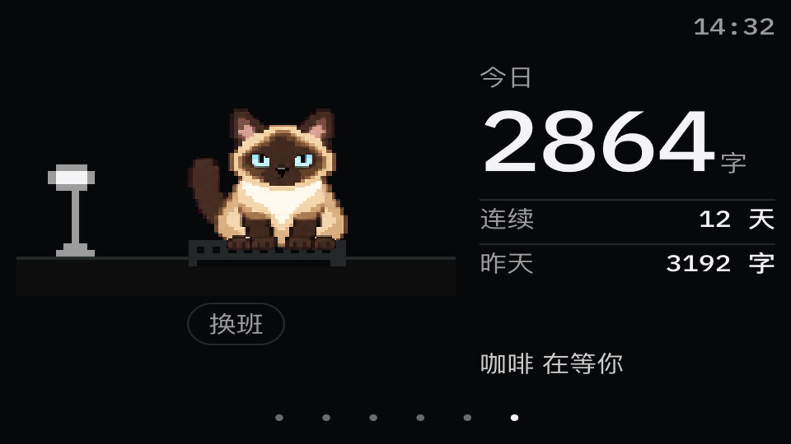

咖啡（暹罗）与 Midi（虎斑）· 已接入正式页面
以下直接来自构建后的 Electron 页面，使用示例数据；两套形象各拍一组，托盘「Midi 形象」里切换。按面板补偿后的比例显示；也可以查看 960×540 输出比例。

96×96 猫框 · 左侧场景 224×128 · 右侧统计保留。实现与验证记录
以下直接来自构建后的 Electron 页面，使用示例数据；两套形象各拍一组，托盘「Midi 形象」里切换。按面板补偿后的比例显示；也可以查看 960×540 输出比例。

96×96 猫框 · 左侧场景 224×128 · 右侧统计保留。实现与验证记录